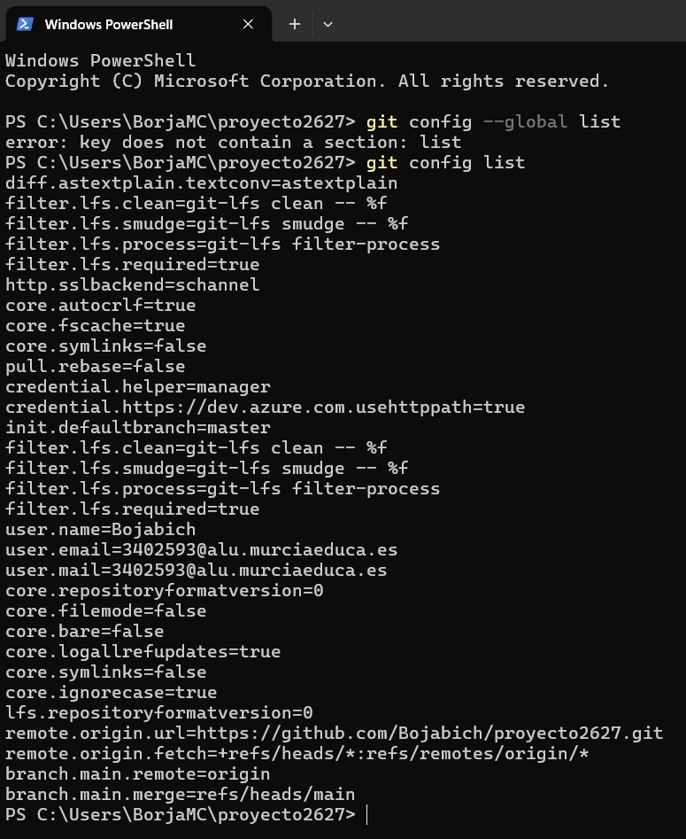
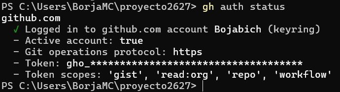
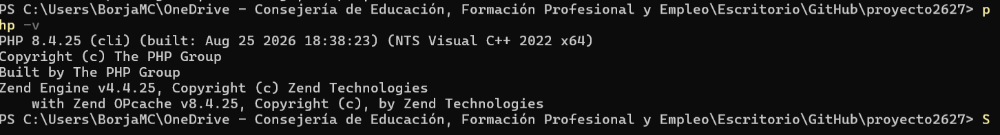
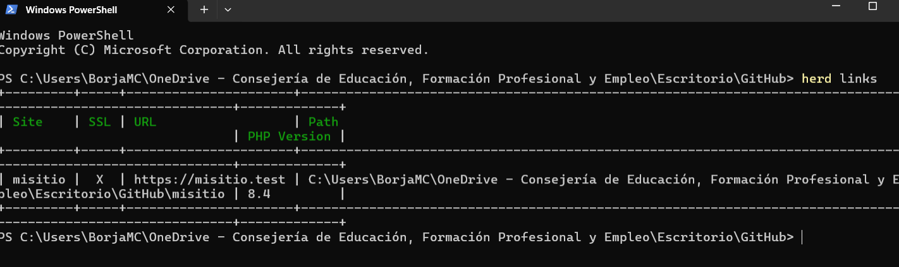
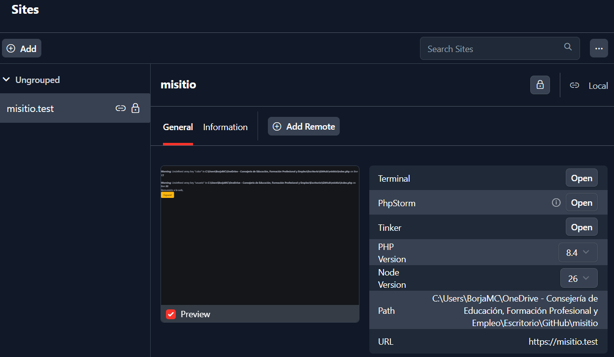

Instalación y configuración del sitio web local
0. Instalar Git
Descargamos Git para Windows desde su página oficial e instalamos la versión de 64 bits. Durante la instalación se pueden mantener las opciones recomendadas.
Comprobamos que Git está disponible:
git --version

1. Configurar Git en local
Indicamos el nombre y el correo que queremos asociar a los nuevos commits. Sustituimos los valores de ejemplo por los nuestros:
git config --global user.name "Tu nombre"
git config --global user.email "tu-correo@example.com"
Comprobamos la configuración:
git config --global --list
La salida debe incluir user.name y user.email con los valores configurados.

2. Instalar GitHub CLI
Instalamos GitHub CLI (gh) desde su página oficial o, en Windows, con el gestor winget:
winget install --id GitHub.cli
Abrimos una nueva terminal y comprobamos la instalación:
gh --version
3. Iniciar sesión y comprobar GitHub CLI
Iniciamos el proceso de autenticación con la cuenta de GitHub:
gh auth login
Elegimos GitHub.com, el protocolo HTTPS y la opción de autenticación mediante navegador. Seguimos las indicaciones que aparecen en la terminal y confirmamos el acceso en el navegador.
Verificamos el estado de la sesión:
gh auth status

4. Instalar Herd y seleccionar PHP 8.4
Descargamos e instalamos Herd para Windows desde la página oficial de Laravel Herd. Herd proporciona el entorno local para ejecutar PHP y servir el sitio.
En Herd, abrimos Settings / Preferences → PHP e instalamos PHP 8.4 si todavía no está disponible. Después seleccionamos PHP 8.4 como versión global. También se puede seleccionar desde una terminal:
herd use 8.4
Comprobamos la versión activa:
php -v

5. Clonar el repositorio misitio
Creamos o elegimos una carpeta para los proyectos y clonamos el repositorio. Sustituimos USUARIO por el propietario real del repositorio:
Set-Location -Path "$env:USERPROFILE\Herd"
gh repo clone USUARIO/misitio
cd misitio
Comprobamos que estamos dentro de la copia local y que Git reconoce el repositorio:
Get-Location
git status
La ruta actual debe terminar en Herd\misitio y git status debe mostrar la rama actual y el estado de trabajo.

6. Enlazar misitio a Herd y activar HTTPS
Abrimos Herd y usamos la opción para enlazar un proyecto existente (Add site / Link existing project, según la versión de Herd). Seleccionamos la carpeta local misitio. Al estar dentro de la carpeta Herd, Herd puede reconocerla como sitio local; si el asistente solicita el nombre del sitio, indicamos misitio.
Para activar HTTPS, seleccionamos el sitio en Herd y usamos la opción Secure. También se puede ejecutar desde la carpeta del proyecto:
herd secure misitio
Herd asigna el dominio local https://misitio.test y prepara el certificado local. Abrimos esa dirección en el navegador y comprobamos que carga la página del sitio y que la conexión utiliza HTTPS.

Resumen: tema Read the Docs y plugins de ProperDocs
La documentación se ha preparado con ProperDocs, que transforma páginas Markdown en un sitio web estático a partir de la configuración properdocs.yml.
-
Tema
readthedocs: organiza el contenido como documentación técnica, con navegación lateral, jerarquía de páginas y controles de navegación entre páginas. En esta práctica se activa además el resaltado de sintaxis para los bloques de código (highlightjs) y se declaran PowerShell, Bash y YAML como lenguajes a resaltar. -
Plugin
search: plugin integrado de ProperDocs que crea un índice de búsqueda para encontrar contenido en las páginas. Con la configuración predeterminada, indexa títulos, encabezados y texto completo, lo que permite localizar rápidamente pasos y comandos. - Página Markdown (
docs/index.md): contiene los pasos, comandos, explicaciones y referencias a las capturas. ProperDocs la convierte en la página principal del sitio. - Archivo
properdocs.yml: define el título, la navegación, el tema, el resaltado de código y el plugin de búsqueda.
El tema Read the Docs y el plugin search son componentes diferentes: el tema controla la presentación y navegación; el plugin añade la búsqueda del contenido. Para instalar ProperDocs junto con el tema elegido y previsualizar la documentación en local:
python -m pip install properdocs properdocs-theme-readthedocs
properdocs serve
Al iniciar el servidor, ProperDocs muestra la dirección local de previsualización en la terminal.